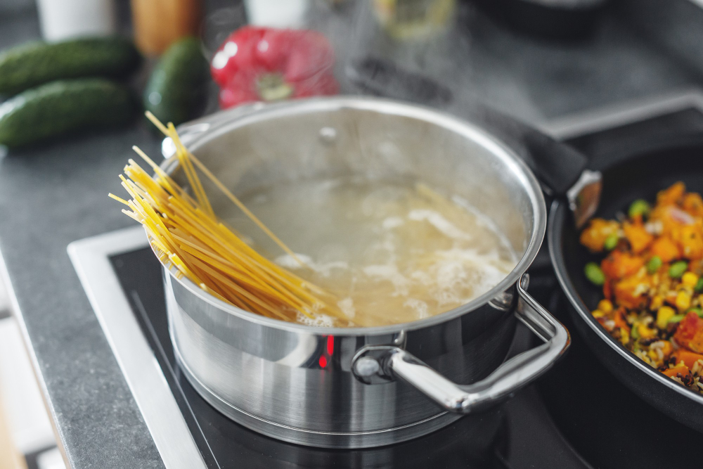

Fragt man einen echten Chefkoch nach der richtigen Salzmenge im Nudelwasser, so kommt mit Sicherheit die 10, 100, 1000-Regel. Die besagt, es braucht 10 Gramm Salz auf 100 Gramm Nudeln und 1000 Milliliter Wasser. Wenn mann sich daran orientiert kann man nicht viel falsch machen.
